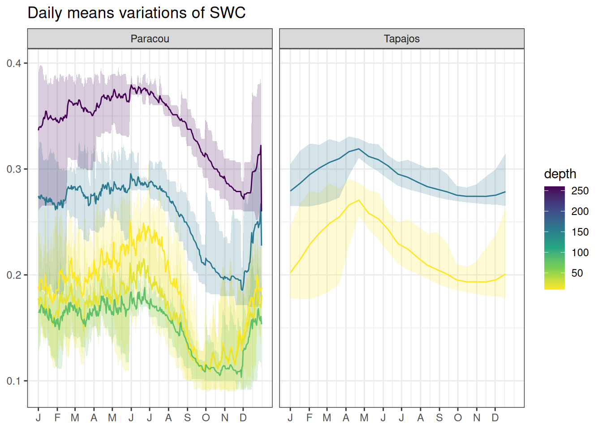

Climate data for Paracou and Tapajos used to calibrate the new leaf phenology module in TROLL version 4 and evaluate simulation outputs.
Carbon and water fluxes - FLUXNET
FLUXNET 2015 (Pastorello, Gilberto et al. 2020) at Paracou and Tapajos was retrieved freely from FLUXNET (the manifest is available in data). They are mainly used for TROLL model forcing but also include fluxes for TROLL simulations validation including growth primary productivity (GPP) and evapotranspiration (ET). We also computed Photosynthetically Active Radiation (PAR) as it is a driver of GPP, and daily maximum Vapour Pressure Deficit (VPD) as it is a driver of ET. We removed GPP and ET data between 2006 and 2009 in Tapajos due to a known incident with the sensors.
The FLUXNET2015 Dataset includes data collected at sites from multiple regional flux networks. The preparation of this FLUXNET Dataset has been possible thanks only to the efforts of many scientists and technicians around the world and the coordination among teams from regional networks.
PI: Damien Bonal (Paracou), Mike Goulden (Tapajos), Scott Saleska (Tapajos)
Code
lambda <-function(t_air) 2.501- (2.361*10^-3)*t_airfluxnet <-list("Paracou"="data/climate/FLX_GF-Guy_FLUXNET2015_SUBSET_HH_2004-2014_2-4.csv","Tapajos"="data/climate/FLX_BR-Sa1_FLUXNET2015_SUBSET_HR_2002-2011_1-4.csv") %>%lapply(vroom::vroom, na ="-9999") %>%bind_rows(.id ="site") %>%select(site, TIMESTAMP_START, TIMESTAMP_END, P_F, SW_IN_F, TA_F, VPD_F, WS_F, GPP_NT_VUT_REF, LE_F_MDS) %>%mutate(time =as_datetime(as.character(as.POSIXlt(as.character(TIMESTAMP_START), format ="%Y%m%d%H%M")))) %>%rename(rainfall = P_F, snet = SW_IN_F, temperature = TA_F, vpd = VPD_F, ws = WS_F,gpp = GPP_NT_VUT_REF, le = LE_F_MDS) %>%mutate(et =10^-6*le*60*30/lambda(temperature)) %>%# W.m-2.half-hour to MJ.s-1 to kg.m-2.half-hourmutate(et =ifelse(hour(time) %in%7:18, et, NA)) %>%mutate(vpd = vpd/10,gpp = gpp/100, par = snet*2.27*60*30/10^3) %>%select(site, time, vpd, par, gpp, et)fluxnet_tapajos <-filter(fluxnet, site =="Tapajos")time_freq <-0.5# TROLL v4start <-as_datetime(as_date(min(fluxnet_tapajos$time))) # to start from 00:30stop <-max(fluxnet_tapajos$time) +30*60# to stop at 23:00time <-seq(start, stop, by =60*60* time_freq)data <-left_join(tibble(time = time), fluxnet_tapajos,by ="time" ) %>%group_by(date =as_date(time)) %>%mutate(across(c(vpd, gpp),~ zoo::na.spline(., time, na.rm =FALSE))) %>%mutate(across(c(par, et),~ zoo::na.approx(., time, na.rm =FALSE))) %>%ungroup() %>%select(-date) %>%mutate(across(c(par), ~ifelse(is.na(.), 0, .))) %>%mutate(across(c(par), ~ifelse(. <0, 0, .))) %>%mutate(site ="Tapajos")bind_rows(filter(fluxnet, site =="Paracou"), data) %>%mutate(vpd_max = vpd) %>%select(-vpd) %>%gather(variable, value, -site, -time) %>%group_by(site, variable, date =date(time)) %>%select(-time) %>%mutate(value =ifelse(value %in%c("et", "par"),sum(value, na.rm = T), value)) %>%mutate(value =ifelse(variable %in%c("vpd_max"),max(value, na.rm = T), value)) %>%summarise_all(mean, na.rm = T) %>%mutate(value =ifelse(variable %in%c("et", "gpp") & site =="Tapajos"&year(date) %in%2006:2009,NA, value)) %>%write_tsv("outputs/fluxnet_fluxes.tsv")
Tapajos and Paracou Solar Induced Fluorescence (SIF) from TROPOMI satellites was retrieved from https://figshare.com/ndownloader/articles/19336346/versions/2 and processed with the R script available in data. The SIF values were converted in Growth Primary Productivity (GPP) using \(GPP = 15.343 \times SIF\) following Chen et al. (2022).
Guyaflux are Paracou Eddy Flux tower raw data (BONAL et al. 2008) from 2004 to 2022. Vapour Pressure Deficit (VPD, kPa) is computed from relative humidity (%). Data are available on demand and can be partly retrieved from PLUMBER2 (Ukkola, Abramowitz, and De Kauwe 2022) or FLUXNET (Pastorello, Gilberto et al. 2020). Guyaflux was mainly used for TROLL simulations validation including soil water content (SWC) at different depths.
read_tsv("outputs/guyaflux_swc.tsv") %>%mutate(depth =as.numeric(gsub("swc", "", variable))) %>%group_by(depth, day =yday(date)) %>%summarise(l =quantile(value, 0.025, na.rm =TRUE), m =mean(value, na.rm =TRUE), h =quantile(value, 0.975, na.rm =TRUE)) %>%ggplot(aes(day, m, col = depth, fill = depth, group = depth)) +annotate("rect", xmin =214, xmax =306, fill ="#fff4e0",ymin =-Inf, ymax =Inf, alpha =0.5) +geom_ribbon(aes(ymin = l, ymax = h), col =NA, alpha =0.2) +geom_line() +theme_bw() +scale_color_viridis_c(direction =-1) +scale_fill_viridis_c(direction =-1) +theme(axis.title =element_blank()) +ggtitle("Daily means variations of SWC in Paracou") +scale_x_continuous(breaks =c(1, 32, 61, 92, 122, 153, 183, 214, 245, 275, 306, 336),labels =c("J", "F", "M", "A", "M", "J", "J", "A", "S", "O", "N", "D"))

Litterfall
Paracou litterfall were provided by Damien Bonal (D. Bonal pers. com.). Tapajos litterfall are available online through the Oak Ridge National Laboratory (ORNL) Distributed Active Archive Center (DAAC): https://daac.ornl.gov/LBA/guides/CD10_Litter_Tapajos.html . Litterfall data were mainly used the calibration of the new leaf phenology module in TROLL version 4. Leaf litterfall data were converted in fluxes over a defined time lag (depending on site and sampling date). For calibration two indices were derived for each years:
Litterfall pike day as the day of the yearly maximum value
Litterfall ratio as the ratio of the pike value (mean of the yearly maximum value and the previous and next values) divided by the basal flux (mean values between January and April)
Canopy structure and dynamics was assessed using Leaf Area Index (LAI), Leaf Area Density (LAD) and Plant Area Density (PAD) from local observation using terrestrial or drone LIDAR remotely-sensed by MODIS. LIDAR data includes drone data from Paracou provided by Nicolas Barbier Bonal (G. Vincent & N. Barbier pers. com.) and terrestrial data from Tapajos etrieved from Smith et al. (2019): https://nph.onlinelibrary.wiley.com/doi/10.1111/nph.15726. Remotely-sensed data from MODIS were retrieved from PLUMBER2 on Research Data Australia: https://researchdata.edu.au/plumber2-forcing-evaluation-surface-models/1656048.
BONAL, DAMIEN, ALEXANDRE BOSC, STPHANE PONTON, JEAN-YVES GORET, BENOT BURBAN, PATRICK GROSS, JEAN-MARC BONNEFOND, et al. 2008. Impact of Severe Dry Season on Net Ecosystem Exchange in the Neotropical Rainforest of French Guiana.Global Change Biology 14 (8): 191733. https://doi.org/10.1111/j.1365-2486.2008.01610.x.
Chen, Xingan, Yuefei Huang, Chong Nie, Shuo Zhang, Guangqian Wang, Shiliu Chen, and Zhichao Chen. 2022. A Long-Term Reconstructed TROPOMI Solar-Induced Fluorescence Dataset Using Machine Learning Algorithms.Scientific Data 9 (1). https://doi.org/10.1038/s41597-022-01520-1.
Pastorello, Gilberto, Trotta, Carlo, Canfora, Eleonora, Chu, Housen, Christianson, Danielle, Cheah, You-Wei, Poindexter, Cristina, et al. 2020. The FLUXNET2015 Dataset and the ONEFlux Processing Pipeline for Eddy Covariance Data.Nature Publishing Group. https://doi.org/10.5167/UZH-190509.
Smith, Marielle N., Scott C. Stark, Tyeen C. Taylor, Mauricio L. Ferreira, Eronaldo de Oliveira, Natalia Restrepo-Coupe, Shuli Chen, et al. 2019. Seasonal and Drought-Related Changes in Leaf Area Profiles Depend on Height and Light Environment in an Amazon Forest.New Phytologist 222 (3): 128497. https://doi.org/10.1111/nph.15726.
Ukkola, Anna M., Gab Abramowitz, and Martin G. De Kauwe. 2022. A Flux Tower Dataset Tailored for Land Model Evaluation.Earth System Science Data 14 (2): 44961. https://doi.org/10.5194/essd-14-449-2022.